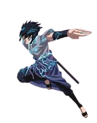
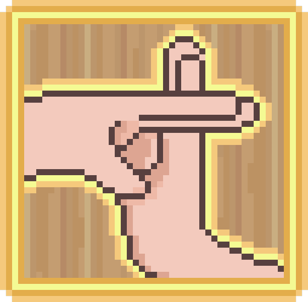
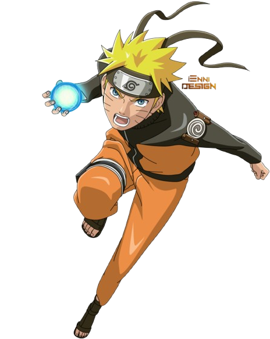

Master the chakra. Unleash the legend.

One Thousand Birds. Raise your left hand to strike.

Kage Bunshin. Requires Chakra Synchronization training.

Spiraling Wind. Raise your right hand to manifest.
Instantly sync your chakra by forming the hand sign.